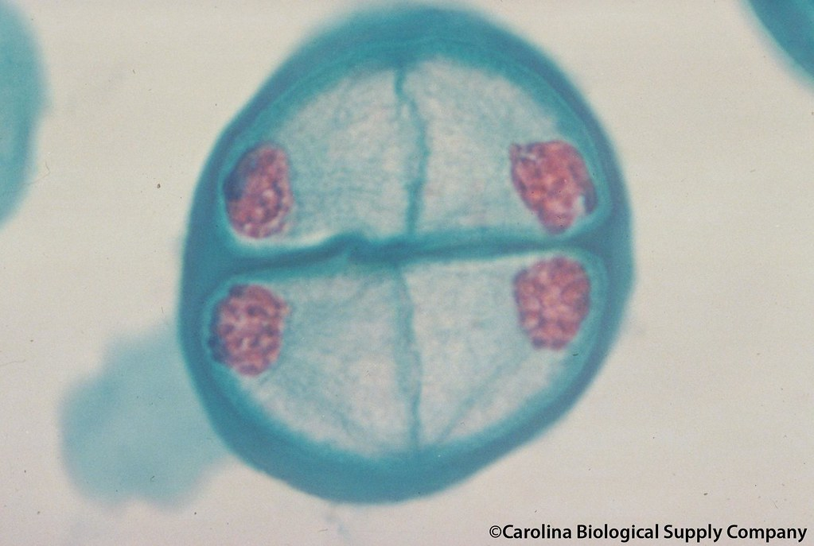

What Happens During Telophase?
Telophase is the final stage of mitosis. This stage involves the following key events:
- The chromosomes, which were previously condensed, turn back into chromatin.
- New nuclear envelopes form around each set of chromosomes, creating two distinct nuclei in the cell.
- The spindle fibers dissolve as the cell prepares for cytokinesis, where the cell splits into two identical daughter cells.
